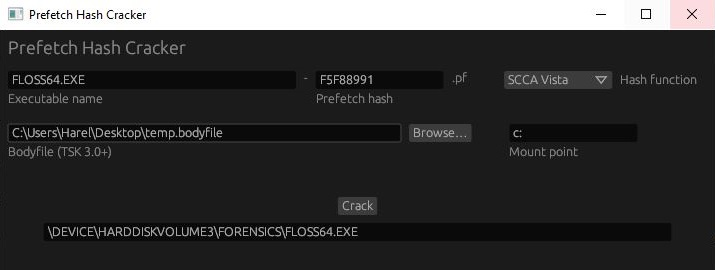

I often test my tools on my old computer at home. It’s so much more interesting to investigate than a newly created virtual machine. Today, while testing, I found evidence of activity from almost 2 years ago. It got me really excited, and I thought it would make a cool blog post!
Here’s a snippet from the timeline I created using MFTECmd and INDXRipper:

A Prefetch File in $I30 Slack
The Prefetch file FLOSS64.EXE-F5F88991.pf was created on September 10th 2020. Today is July 2nd 2022; almost 2 years have passed! There’s no trace of this file in the MFT, nor in $J - which goes only a week back. The only thing left proving this file once existed is a $I30 entry in slack space of the Prefetch folder.
This Prefetch file must have been created because I executed Floss, which is a tool from FireEye. But floss64.exe is not in the MFT or in $J. It’s not in my timeline, meaning INDXRipper could not find it in $I30 of any directory. I parsed the ShimCache and AmCache, but there was nothing there either.
The $I30 of the Prefetch folder is a forensic goldmine; The $I30s from the users’ Recent folders are also very valuable. When triaging a system, I usually collect the $I30s from such key folders, these are just a few examples:
C:\Windows\Prefetch C:\Users\*\AppData\Roaming\Microsoft\Windows\Recent C:\ProgramData\Microsoft\Windows Defender\LocalCopy C:\Users\*\Downloads C:\PerfLogsI use RawCopy to collect these; KAPE does not currently support $I30 collection.
The Prefetch file was created at 23:14:57, probably right after floss64.exe was first executed. We can also see a last modification time at 23:25:35. If I were to find this Prefetch file in the MFT, and this last modification timestamp were from $STANDATD_INFORMATION, I would say that it indicates the last execution time of floss64.exe. However, this timestamp is from $I30 slack, so this might not be the case.
I know what you think - $I30 timestamps should mirror those in the $STANDATD_INFORMATION attribute! And you are absolutely right. But $I30 entries, as opposed to MFT entries, can move around throughout their lifetime. When a file is created or deleted in a directory, $I30 entries of other files in the directory may be unallocated, and then reallocated in a different place. This entry could have been unallocated while the Prefetch file was still active! In this case, the entry may contain outdated information.
PyInstaller
Floss is written in Python, and is packaged with PyInstaller. Here’s is a brief description of PyInstaller, straight from its manual:
PyInstaller bundles a Python application and all its dependencies into a single package. The user can run the packaged app without installing a Python interpreter or any modules.
There are also details about its inner workings:
[…] The bootloader is the heart of the one-file bundle also. When started it creates a temporary folder in the appropriate temp-folder location for this OS. The folder is named
_MEI*xxxxxx*, where xxxxxx is a random number. […] The bootloader uncompresses the support files and writes copies into the temporary folder.
At 23:28:52, The folder _MEI86322 was created in my user’s Temp directory, which indicates I executed a PyInstaller executable. INDXRipper was kind enough to parse the $I30 of this folder for us, so we can see a compiled python module (.pyd file) that was created inside the folder and deleted since.
My guess is that floss64.exe was first executed at 23:14:57, then executed again at 23:25:35, and then again at 23:28:52. The $I30 entry we found in slack space was unallocated somewhere between 23:25:35 and 23:28:52, so the last modification time wasn’t updated the next time floss64.exe was executed.
An interesting thing to note, is that we only see a single _MEI*xxxxxx* folder; yet, we know a unique one should have been created for every execution of floss64.exe.
When the bundled code terminates, the bootloader deletes the temporary folder. […] The
_MEI*xxxxxx*folder is not removed if the program crashes or is killed
This is interesting! The folder _MEI86322 is not deleted, so floss64.exe might have crashed after it was executed at 23:28:52. I looked for an error report, but couldn’t find one.
Prefetch Hash Cracking
Can we find the folder from which floss64.exe was executed? Unfortunately, ShimCache and AmCache aren’t much help this time. A cool thing we can try is to brute-force the Prefetch hash; i.e, hashing possible full paths of floss64.exe until the result matches the Prefetch hash, which is F5F88991. I wrote a little tool to do this for me; I just have to give it the bodyfile I used to create the timeline, so it can enumerate all the folders floss64.exe might have been executed from:

This doesn’t always work, but this time it did! floss64.exe was executed from the Forensics directory on the C: drive.
Wrapping Up
That’s it for this post! I wanted to demonstrate both the value and the subtleties of $I30 analysis; let me know if you found that educational. Also, I’m no expert; If you think I got something wrong, please tell me. Home Adventures may become a series if I find the time for it. I may also write a detailed post about INDXRipper; Let me know if you’d be interested in that!
Tool List
| Tool | Source |
|---|---|
| MFTECmd | https://github.com/EricZimmerman/MFTECmd |
| INDXRipper | https://github.com/harelsegev/INDXRipper |
| Prefetch Hash Cracker | https://github.com/harelsegev/prefetch-hash-cracker |